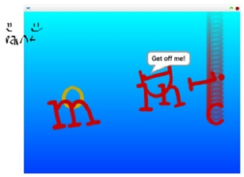
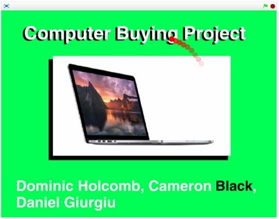
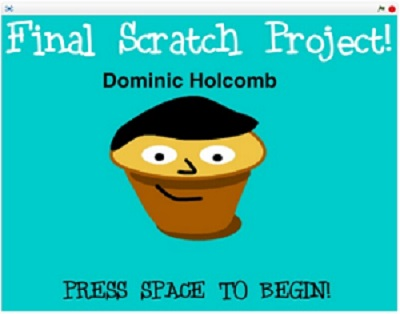

Name Assignment

Description
Use Scratch to display your name in an interesting way. All of the letters had to have an interesting behavior. Each letter had to be a specific sprite. For extra credit we could make everything reset when the green flag was clicked.
Concepts Learned
- I used event blocks like when green flag clicked or when a key is pressed to learn how to trigger an event.
- I created my own sprites for my letters.
- I used if statements to decide if something was happening.
- I used the motion blocks to move the sprites and make them spin.
- I used looks to change the color of some sprites.
Computer Buying Project

Description
Create a Scratch presentation that compares and contrasts different types of computers. We had to interview a person’s needs for a computer. We found 4 different options for our interviewee. Then we chose a final computer to give to the person. And we needed to make it interesting to watch.
Concepts Learned
- I learned the differences between different computers.
- I learned that maybe Mac isn’t always best. .
- I take that back Apple prevails all!
- I learned how to present something on Scratch.
- I learned what makes computers more expensive.
Name Assignment

Description
In our Final Project we got to chose between a story and a game. I chose a game. I had to make the project get harder as it progressed. The project had to reset whenever the flag was clicked and it had to say if you won or not.
Concepts Learned
- I learned how to make variables in Scratch.
- I learned how to use broadcasts.
- I learned how to make sprites move on command.
- I learned how to make a timer.
- I learned sensing, if touching something or a color.
- Also, hide and show blocks in looks.